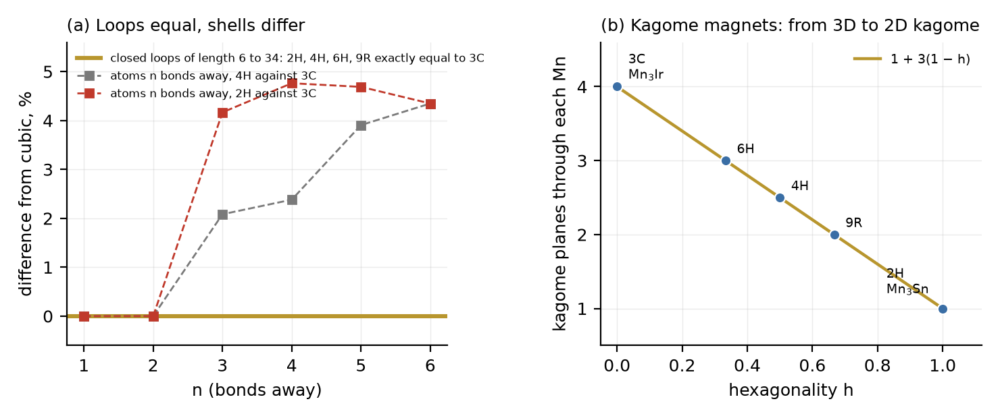

Loops, kagome planes and the Hexagonality Law
In spin ice (Dy2Ti2O7, Ho2Ti2O7) the magnetic atoms sit at the corners of tetrahedra that touch only at corners: the pyrochlore network. Each tetrahedron must have two spins pointing in and two out, the same rule as the hydrogen atoms of water ice, and like ice the material keeps a frozen-in entropy at the lowest temperatures. The pyrochlore network is the network of bond midpoints of a diamond-like crystal (#60), so it follows the stacking of the diamond layers: cubic, hexagonal or any mixture, as in #73. In the kagome antiferromagnets Mn3X the manganese atoms make kagome nets of corner-sharing triangles inside close-packed layers, the same AX3 layers as the hexagonal perovskites of #72; Mn3Ir and Mn3Pt stack them cubic, Mn3Sn and Mn3Ge hexagonal. Their spins on the kagome triangles give a large anomalous Hall effect without net magnetisation. DICTO chose these two families as the last materials study.
Proof. Each site is the midpoint of one bond; there are two bonds per atom. The bond along the stacking axis, one per two atoms, has its midpoint in a triangular layer; the three slanted bonds have theirs in kagome layers. Two tetrahedra sharing a corner are the tetrahedra of the two atoms of one bond; they are eclipsed exactly when the bond is eclipsed, which by #73 happens for h/2 bonds per atom. ∎
The loops of the network change shape with the stacking. Counted from explicit coordinates on 3C, 2H, 4H, 6H and 9R, each tetrahedron has 3h/2 boat-shaped six-loops and 2 − 3h/2 chair-shaped ones, two in all, and three eight-loops, the same in every stacking.
A closed non-backtracking loop is a walk along the network that returns to its start and never turns straight back. These loops carry the corrections to Pauling's estimate of the ice-rule entropy. We counted them on 3C, 2H, 4H, 6H and 9R, from one column of sites in a cell 36 by 36 sites wide and at least 36 layers high, so that no loop up to length 34 can wrap round the cell, with every bond checked against its length.
The networks themselves differ. The numbers of atoms 3, 4, 5 and 6 bonds away are 24, 42, 64, 92 for the cubic stacking and 25, 44, 67, 96 for the hexagonal, the known values for diamond and lonsdaleite, with 4H in between (Figure 1a). The shells see the stacking from three bonds on; the loops do not see it up to 34.
Entropy. Pauling's estimate gives the same residual entropy, (1/2) ln(3/2) per spin in spin ice, for every stacking. Onsager proved that the hexagonal value is at least the cubic one; Nagle's series found them equal within its precision, and Xu, Lin and Zhang's tensor-network computation finds w = 1.5074584 for both, as numerical evidence that they are equal. The Loop Equality gives a counting reason: the loops that correct Pauling's estimate are the same on both, through loops of 34 bonds. It also extends the statement from the two pure stackings to all of them: to the extent that the entropy is set by these loops, spin ice and water ice have the same frozen-in entropy in every stacking, stacking-disordered ice included. In the language of the Hexagonality Law, this is the law with zero slope.

In Mn3X each close-packed layer holds manganese on a kagome net and X on the remaining quarter of the sites, and the layers stack so that no two X atoms touch. We counted from explicit coordinates on 3C, 2H, 4H, 6H and 9R. Many things do not change: each manganese has 8 manganese and 4 X neighbours, 2 triangles of manganese in its layer and 6 tilted ones, and one third of an octahedral hole surrounded by manganese only. What changes is how the tilted triangles join.
Proof. A kagome plane through the atom needs two triangles of the plane meeting at the atom, one on each side. For a tilted plane, one triangle reaches into the layer below and the other into the layer above, and the two lie in one plane exactly when the atoms above are the images of the atoms below under inversion through the atom. That is so when the layers below and above sit on different positions, a cubic layer, for each of the three tilted directions; when they sit on the same position, a hexagonal layer, the images are mirror images and no tilted pair is coplanar. Averaging over the layers gives 1 + 3(1 − h). ∎ The count was checked on all five stackings (1 + 3(1 − h) = 4, 3, 2.5, 2, 1 for 3C, 6H, 4H, 9R, 2H).
So the law counts the dimension of the kagome network. In cubic Mn3Ir every manganese lies on four kagome planes, one in each of the four (111) directions, as Chen, Niu and MacDonald describe; in hexagonal Mn3Sn on one, the basal plane. The intermediate stackings, such as the 4H (D024) type, would have kagome planes in between, 2.5 per atom on average: half the atoms with four, half with one. The Swap Rule of #61 and #64 applies to these layers unchanged, since they are the close-packed AX3 layers treated there and in #72; we do not test it again.
(1) The Loop Equality is computed through length 34 on five stackings; we have no proof for all lengths and all stackings. (2) The step from equal loops to equal entropy is not exact: the corrections to Pauling's estimate come from clusters of loops, not only from loop counts; the agreement with the tensor-network values supports it but does not prove it. (3) Theorem 2 counts geometry only; which kagome planes carry the spin order and the Hall effect depends on the magnetic structure, and for Mn3Sn a recent study finds the basal-plane Hall response forbidden by symmetry.
The Hexagonality Law reaches magnets in two ways. The kagome planes through each manganese atom of the Mn3X magnets fall on its straight line, 1 + 3(1 − h), from three-dimensional kagome in Mn3Ir to two-dimensional in Mn3Sn. The loops of the pyrochlore network do not depend on the stacking at all through length 34, so the frozen-in entropy of spin ice and ice is the same for every stacking: the law with zero slope. This study closes the line of work on materials.
The ice rule and its entropy estimate are Pauling's; the inequality between the hexagonal and cubic entropies Onsager's; the series Nagle's; the numerical values Herrero and Ramírez's and Xu, Lin and Zhang's, who give evidence that the two are equal; the kagome description of Mn3Ir is Chen, Niu and MacDonald's. The pyrochlore network as bond midpoints of a stacked diamond network is DICTO Janus c/h Pyrochlore (#60). Stated here: the counts of Theorems 1 and 2 with proofs, the loop shapes, and the Loop Equality as computed. We found no earlier statement that diamond-like networks of different stacking have equal loop counts. DICTO chose the two families and set the end of the materials line; the computations are joint work.
Sources checked (28 October 2026). Read: X.-Z. Xu, T.-Y. Lin and G.-M. Zhang, Equivalence of residual entropy of hexagonal and cubic ices from tensor network methods, arXiv 2511.22477 v3 (pp. 1, 7–8). Search summaries, not read in full: C. P. Herrero and R. Ramírez, Configurational entropy of hydrogen-disordered ice polymorphs, arXiv 1406.5929; arXiv 2404.13897 (transfer matrices, Onsager's inequality as reported in Nagle's thesis); arXiv 2009.11591; H. Chen, Q. Niu and A. H. MacDonald, Anomalous Hall effect arising from noncollinear antiferromagnetism, arXiv 1309.4041; J. Kübler and C. Felser, arXiv 1410.5985 (Mn3Sn, Mn3Ge); arXiv 2603.13718 (Mn-rich Mn3Sn). Cited as given in the reference list of Xu et al., not read: L. Pauling, J. Am. Chem. Soc. 57, 2680 (1935); J. F. Nagle, J. Math. Phys. 7, 1484 (1966). Web searches: residual entropy of ice Ih and Ic; Ihara zeta function and crystal nets (no result on diamond against lonsdaleite); Mn3Sn and Mn3Ir structures.
Data and code. Study 2026-10-28-pyrochlore-kagome (pyro_counts.py, loops2.py, coordseq.py, a3b_counts.py, fig74.py, with outputs; loops.py kept as the superseded small-cell run), attached to this record. References: DICTO, The Rule of Halves (#57), DICTO DOI 10.5281/zenodo.23647898; DICTO Janus c/h Pyrochlore (#60), 10.5281/zenodo.23678750; The Swap Rule (#61), 10.5281/zenodo.23682596; The Swap Rule in Crystals (#64), 10.5281/zenodo.23709753; The Focus (#66), 10.5281/zenodo.23717687; The Hexagonality Law in Real Materials IV (#72), 10.5281/zenodo.23728287; V (#73), 10.5281/zenodo.23728921.